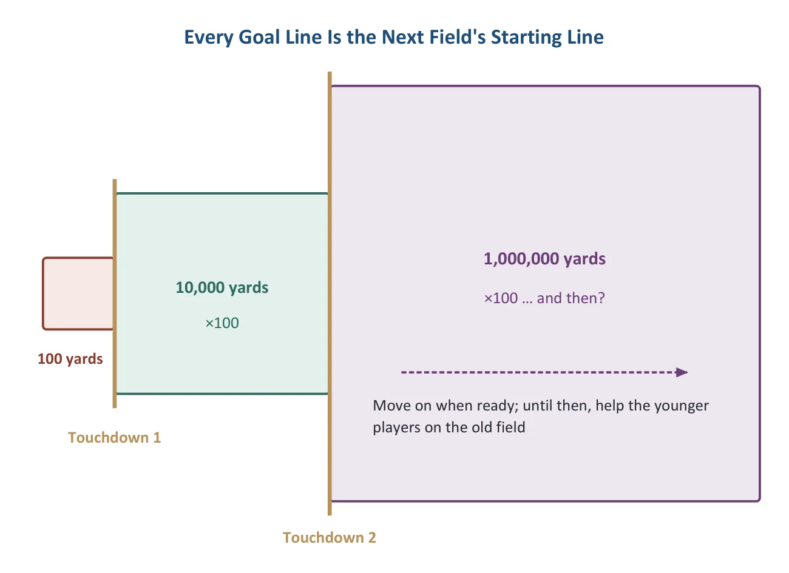

Começa a antítese final
Original: A História Final, capítulo XI, Começo da antítese final (pp. 101–109)
NESTE CAPÍTULO
A idade pós-Última começa no tempo, mas nunca termina, e dentro dela um período segue outro sem limite, cada meta alcançada abrindo outra mais distante. Sadler sustenta que os mortais não mergulham de uma só vez na eternidade e na infinitude, mas se ajustam a elas lentamente. Ele ilustra o crescimento do senso de tempo com uma aritmética simples e retrata o ajustamento à infinitude com uma história de futebol americano. Três vezes, argumenta ele, Deus criou uma nova necessidade retirando algo; por fim, Ele apresenta o Cosmos Infinito, um domínio esvaziado de toda possibilidade de experiência finita e absonita, como a antítese final.
1. Onde os pontos de referência desaparecem (orig., p. 101)
Ao começar a estudar a antítese final, Sadler perde pela primeira vez os seus pontos de referência familiares. Ele atravessou a fronteira do nível espacial mais exterior e passou do fim da sexta idade do universo. Para os acontecimentos além do universo-mestre, nem mesmo os Arquitetos Mestres podem mais mostrar o caminho. Assim, ele começa forjando um vocabulário para tempos e lugares incomensuravelmente distantes do aqui e agora.
Assim como aquilo que se segue ao aparecimento da criação central na eternidade é chamado de “pós-Havona”, Sadler chamou de “pós-Supremo” o que vem depois que o grande universo se completa e o Supremo emerge. Aos acontecimentos posteriores à emergência final de Deus, o Último, ele agora chama de “pós-Últimos”.
2. A idade pós-Última (orig., pp. 101–102)
O que mudou?
As idades do universo diferem em quantidade: da segunda à sexta, elas se tornam cada vez mais longas. Algumas diferem também em qualidade. A segunda idade é a única idade do crescimento Supremo, e as quatro idades do espaço exterior são semelhantes por serem idades pós-Supremas, idades do crescimento experiencial da Ultimidade. A idade pós-Última é nova e qualitativamente diferente de tudo o que veio antes. Sadler conta sete diferenças:
- O universo-mestre terminou de crescer.
- A Supremacia completou o seu crescimento pós-finito (absonito).
- A primeira Trindade experiencial está plenamente unificada.
- Deus, o Último, emergiu finalmente.
- A segunda Trindade experiencial tornou-se factual.
- O potencial para o crescimento absonito está esgotado.
- A busca absonita do Pai no Seu aspecto último terminou.
Uma última idade sem fim
Há ainda mais uma diferença: esta idade parece não ter término no tempo. Sadler propõe chamá-la de Idade Final, e, nesse aspecto, ela espelha a primeira idade. A primeira idade, sem começo no tempo, termina, no entanto, no tempo; a Idade Final começa no tempo, mas não tem fim no tempo. Ambas são idades eternas.
Uma idade eterna, insiste Sadler, não precisa ser uma “mancha cinzenta” uniforme que se estende para sempre. Ele encontra uma pista na história planetária. A história de um mundo habitado divide-se em sete épocas mortais, e a última, a idade de luz e vida, parece prosseguir sem fim. Um exame mais atento do texto, porém, mostra que também essa idade se divide em sete estágios.
Esse é apenas o primeiro dos ajustes administrativos sucessivos que acompanham o desdobrar progressivo das idades de realizações cada vez mais brilhantes nos mundos habitados, à medida que eles vão passando do primeiro ao sétimo estágio na sua existência estabelecida.55:4.3
Sadler conjectura que o sétimo estágio, examinado de perto, se dividiria por sua vez em sete subestágios, e que a idade pós-Última será construída da mesma maneira. Cada período tem um começo, um fim e metas que podem realmente ser alcançadas. Apenas o último período de uma série não se fecha; em vez disso, ele lança uma nova série de estágios de crescimento e aponta para um horizonte maior e mais novo, de modo muito semelhante a um alpinista que, ao conquistar um cume, vê erguer-se mais além outro mais alto.
3. O ajustamento à eternidade (orig., pp. 103–104)
A qualidade e a quantidade da eternidade
O Livro de Urântia ensina que os mortais ascendentes se tornam “filhos da eternidade” depois do último sono de trânsito entre o circuito interior de Havona e o Paraíso.
Entre todos os que ascendem à Ilha Eterna, apenas aqueles que chegam lá desse modo são filhos da eternidade…26:11.6
Sadler considera isso uma bela introdução à qualidade da eternidade, mas uma base insuficiente para apreender a sua quantidade. Um senso da quantidade da eternidade, acredita ele, desdobra-se gradualmente na consciência dos mortais, dos ascendentes e dos finalitores, e o processo começa aqui e agora.
A base temporal: o dobro e o quádruplo
Sadler distingue o tempo objetivo, medido pelo relógio, do tempo subjetivo, sentido na consciência. O tempo do relógio sempre avança no mesmo ritmo. O tempo subjetivo se arrasta no tédio e corre no deleite. Por baixo dessas flutuações diárias há também uma tendência de longo prazo: quanto mais se vive, mais depressa o tempo parece passar. Para uma criança de dez anos, as férias de verão são uma pequena fatia da eternidade; para alguém de quarenta, três meses são curtos.
Sadler desenvolve isso com aritmética. Alguém com mais de quarenta anos pode olhar para trás, com memória e sentimento, sobre pelo menos três décadas. Uma pessoa que consegue sentir tanto do passado pode, raciocina ele, também sentir adiante um trecho igual do futuro. A “base temporal” (time-base) pela qual o presente é julgado passa então a ser de sessenta anos: trinta para trás e trinta para a frente. A capacidade de lidar com o tempo cresce, assim, duas vezes mais depressa do que o tempo realmente passa. O Livro de Urântia também associa a maturidade à escala da consciência do tempo.
Há uma relação direta entre a maturidade e a consciência da unidade de tempo, para qualquer intelecto.118:1.3
O que Sadler acha notável é que, depois da fusão com o Ajustador, essa razão deveria dobrar outra vez. Segundo o texto, o Ajustador traz ao ascendente fusionado a experiência e a memória da eternidade passada.
Entre esses novos dons, podem ser mencionados: a fixação da qualidade da divindade, a experiência e a memória da eternidade passada, a imortalidade; e uma fase específica de absolutez potencial.112:7.1
Na fusão, um passado sem fim abre-se subitamente diante do novo ascendente. Sadler supõe que o ascendente só pode assimilar essa memória na proporção do período que viveu conscientemente. Quem passou mil anos nos mundos das mansões poderia absorver outros mil anos da memória do Ajustador. Ele sentiria então dois mil anos de passado e olharia para a frente através de dois mil anos de futuro, com uma base temporal de quatro mil anos, quatro vezes os mil que realmente viveu.

Não aprisionado no presente
A teoria de Sadler é a seguinte. Uma criatura finita está presa ao tempo na exata medida em que está totalmente confinada ao momento presente. Quando extraímos experiência do passado, prevemos as conseqüências dos nossos atos no futuro e entrelaçamos ambos com sabedoria nas decisões presentes, começamos a libertar-nos do tempo. Nessa visão, um ser humano escapa ao tempo duas vezes mais depressa do que o tempo flui, e um ascendente fusionado, quatro vezes mais depressa.
Levada ao limite, a aritmética fica assim. Com um milhão de anos de idade, ter-se-ia uma base temporal de quatro milhões de anos. Com um trilhão de anos, aproximadamente a idade da nebulosa de Andronover, mãe do nosso sol, a base temporal seria de quatro trilhões de anos. Quando se entrar na idade pós-Última, tendo vivido todo o período que Sadler calcula para o universo-mestre, poder-se-ia abarcar quatro vezes esse período. Se a nossa apreensão do tempo cresce quatro vezes mais depressa do que o próprio tempo, então, havendo tempo bastante, até a quantidade da eternidade poderia tornar-se parcialmente compreensível, ou pelo menos muito menos intimidadora. Essa é a conclusão de Sadler.
…mas à medida que o homem ascende e progride interiormente, a visão amplificada dessa sucessão de eventos é tal que ele pode discerni-la, cada vez mais, na sua totalidade.130:7.5
A aritmética de Sadler é uma analogia
Os números dois e quatro não são revelados. O próprio Sadler cerca todo o cálculo com um “se” sobre o mérito do seu raciocínio. O objetivo da aritmética não é a precisão, mas a direção. A eternidade não é uma sala em que se entra por uma porta em determinado dia; é uma terra que se torna gradualmente familiar à medida que mais do passado e do futuro se entrelaça no presente. Isso aponta na mesma direção do ensinamento de que a simultaneidade circular irá, cada vez mais, deslocar a consciência da seqüência linear [130:7.5].
4. O rompimento dos antigos limites (orig., pp. 104–105)
O crescimento experiencial além do nível último significa romper todos os limites anteriores de crescimento. Sadler observa que este é o terceiro desses rompimentos, e que, a cada vez, Deus estabeleceu uma nova necessidade em um novo domínio de experiência “subtraindo” algo das condições existentes.
| Desafio | O que Deus reteve | Quem foi desafiado | Limite transcendido |
|---|---|---|---|
| Pós-Havona | A perfeição original, nos superuniversos | Os seres perfeitos do Paraíso e de Havona | Limite da perfeição original → acrescenta-se o crescimento evolucionário |
| Pós-Supremo | A possibilidade de experiência finita, no espaço exterior | Os cidadãos do grande universo | Limite do crescimento finito → crescimento absonito |
| Pós-Último | A possibilidade de experiência finita e absonita, no Cosmos Infinito | Os cidadãos do universo-mestre completado | Limite do crescimento relativo → crescimento absoluto |
Sadler espera que o terceiro desafio seja a perspectiva do Cosmos Infinito. Os seus seres nativos seriam incapazes tanto de experiência finita quanto de experiência absonita. O esforço para suprir essa falta é a própria Aventura Absoluta, e, no seu decurso, os cidadãos do universo-mestre entrariam em um crescimento de tipo absoluto.
Os três casos têm uma única forma. Deus coloca um desafio diante dos que habitam um universo nuclear; eles respondem servindo e ministrando em um domínio novo, exterior e citoplasmático; e, ao fazê-lo, ultrapassam o antigo limite. Retirar algo parece criar uma deficiência, mas, aos olhos de Sadler, o lugar vazio é exatamente onde ocorre o crescimento seguinte.
5. A capacidade dos finalitores (orig., pp. 106–107)
Que perspectiva aguarda os finalitores em uma idade pós-Última, quando tanto o crescimento finito quanto o absonito tiverem terminado? Na segunda idade, eles chegaram a conhecer o Pai de modo finito; ao longo das quatro idades pós-Supremas, experienciaram-No de modo último. Terminado todo o crescimento relativo, o único crescimento que poderia restar é o absoluto.
Sadler julga a perspectiva promissora. As evidências no texto não são abundantes, diz ele, mas são suficientes para apoiar essa visão, e ela se assenta sobre dois fundamentos. Primeiro, o finalitor possui personalidade, uma dádiva de Deus. A personalidade pode expressar-se e crescer nos níveis finito e absonito e, embora não possa abarcar o nível absoluto, pode penetrá-lo e crescer dentro dele. Segundo, o finalitor está fusionado com um fragmento de Deus. Como já se observou, o Ajustador traz “uma fase específica de absolutez potencial” [112:7.1]: uma qualidade latente no momento da fusão, não imediatamente evidente, mas certa de se realizar no futuro distante.
Sadler infere que essa absolutez é limitada na quantidade da sua autoexpressão exterior, mas não na qualidade da sua auto-realização interior. É a mesma distinção que O Livro de Urântia faz a respeito da função da Trindade Absoluta.
E pareceria, ainda, que o incondicionado seria ilimitado também, ao menos de um ponto de vista qualitativo, embora não estejamos tão seguros quanto a tais relações quantitativas.106:6.4
Como ambas as dádivas, a personalidade e o Ajustador, vêm de Deus, não é descabido atribuir a ambas um potencial de crescimento absoluto. Sadler conclui, portanto, que os finalitores podem continuar crescendo na idade pós-Última, que nada pode deter esse crescimento e que, quantitativamente, eles nunca terminarão de crescer nela. O deles é um destino absoluto em qualidade, mas não infinito em quantidade: buscar Deus como o Absoluto sem jamais conhecer todo Deus como o Absoluto. Sempre mais, para sempre mais, mas nunca tudo. O texto descreve assim o curso seguinte dos finalitores:
Enquanto finalitores, poderia parecer não existir senão um curso a ser seguido, após haverdes alcançado o Último, e esse seria começar a busca do Absoluto.118:2.2
6. O Cosmos Infinito: um citoplasma sem fim (orig., p. 107)
Se Havona forma o núcleo do grande universo, e esse domínio maior forma, por sua vez, o núcleo dos quatro níveis do espaço exterior, de que é o universo-mestre o núcleo? A resposta de Sadler é um possível Cosmos Infinito, um citoplasma interminável e a antítese final. Esse citoplasma teria de ser diferente de tudo o que veio antes, desde os circuitos de Havona até o Nível Espacial Quaternário. Se o universo central é pré-criador e o universo-mestre criador e evolucionário, sugere Sadler, o último universo da infinitude pode ser “supracriador”.
Ao admitirmos um cosmo infinito — algum cosmo ilimitado ultrapassando o universo-mestre — e se concebermos que os desenvolvimentos finais do Absoluto da Trindade acontecerão em um tal estágio superúltimo de ação…106:6.3
Sadler conjectura que esse universo sem fim será experiencial e, no entanto, pós-finito e pós-absonito, e talvez existencial e experiencial ao mesmo tempo. A idéia não é estranha ao texto, que descreve o Absoluto da Deidade exatamente nesses termos.
O Absoluto da Deidade é experiencial na factualização, mas existencial na potencialidade.0:7.5
A noção de um universo sem fim colide com a idéia de que o espaço é limitado em qualquer momento dado? Sadler responde que as duas podem ser sustentadas juntas se se supuser que o espaço se expande mais depressa do que a criação. Que o espaço se estende além dos limites atualmente conhecidos do universo-mestre é certo. O Livro de Urântia diz pouco sobre esse universo do futuro distante, mas, no juízo de Sadler, o seu aparecimento futuro está claramente à vista.
Termo: Cosmos Infinito
O “Cosmos Infinito” (Cosmos Infinite) de Sadler vem do termo de O Livro de Urântia “cosmo infinito” (cosmos-infinite) (106:6.3, 106:7.4). No texto, porém, a palavra refere-se apenas hipoteticamente a um cosmo ilimitado além do universo-mestre. É Sadler quem o transforma em uma criação final definida e o escreve com maiúsculas como nome próprio. Este livro mantém a sua forma com maiúsculas quando fala da construção dele, e a forma do texto, “cosmo infinito” (cosmos-infinite), quando cita o texto.
7. O ajustamento à infinitude: a parábola do campo de jogo (orig., pp. 107–109)
Sadler espera que o ajustamento à infinitude, como o ajustamento à eternidade, seja gradual. Ninguém olhará um dia para o espaço repleto de estrelas e perceberá de repente: “Então isto é a infinitude.” Ao contrário, a infinitude torna-se familiar pouco a pouco, à medida que se notam os marcos que assinalam a passagem do finito ao suprafinito. Palavras como absoluto, eterno e infinito não têm, para nós, nenhum significado real. Em vez de se afogar em uma enxurrada de linguagem pesada, é melhor obter ainda que um pequeno sentimento da verdade, mesmo à custa do fato. Sadler oferece, portanto, uma história como um “conceito-símbolo”.
Em resumo, a história é esta. Um estudante universitário, depois de longo treino, torna-se titular no time de futebol americano e marca o touchdown da vitória no grande jogo. Depois, o treinador o leva ao campo às escuras e acende as luzes. A linha de gol que ele cruzou revela-se apenas a linha de partida de um campo de dez mil jardas que se estende além do alcance da vista.
O treinador lhe diz que ele pode ficar no campo antigo e ajudar os jogadores mais novos até sentir-se pronto. Por algum tempo, ele gosta de ser assistente, mas, no fim, a curiosidade supera o contentamento. Assume o time do grande campo e, depois de uma luta muito mais longa, marca outra vez. Quando o treinador diz que há algo mais para lhe mostrar, o jovem pergunta primeiro: este tem um milhão de jardas? A história termina com o treinador perguntando como ele sabia.

Na leitura deste comentador, três significados estão contidos na história. A linha de gol é sempre a linha de partida do campo seguinte, espelhando a estrutura dos períodos pós-Últimos. O novo campo nunca é imposto a ninguém, e, antes de seguir adiante, o herói ajuda os que vêm depois dele, assim como os cidadãos de um núcleo servem a geração seguinte antes de saírem para fora. E a segunda surpresa é menor do que a primeira. Ajustar-se à infinitude, sugere a parábola, não significa medi-la toda, mas crescer sentindo-se em casa entre campos que continuam a abrir-se sem fim.
Pontos-chave
- A idade pós-Última é uma Idade Final que começa no tempo, mas não tem fim, a imagem espelhada da primeira idade.
- Uma idade eterna não precisa ser monótona: como acontece com luz e vida e os seus sete estágios, ela se desdobra em períodos com metas alcançáveis, e o último de cada série abre uma nova série.
- Sadler sustenta que um senso da quantidade da eternidade cresce gradualmente e calcula que um ser humano tem uma base temporal duas vezes maior que o tempo vivido, e um ascendente fusionado, quatro vezes; trata-se de raciocínio analógico, não de revelação.
- Três vezes Deus abriu novas necessidades e novo crescimento retendo algo: a perfeição original, a experiência finita e, juntas, a experiência finita e a absonita.
- Graças a duas dádivas, a personalidade e o Ajustador, os finalitores continuam a crescer depois do Último, rumo a um destino absoluto em qualidade, mas interminável em quantidade.
- A parábola do campo de jogo mostra que ajustar-se à infinitude é um lento acostumar-se, com um novo campo abrindo-se além de cada linha de gol.